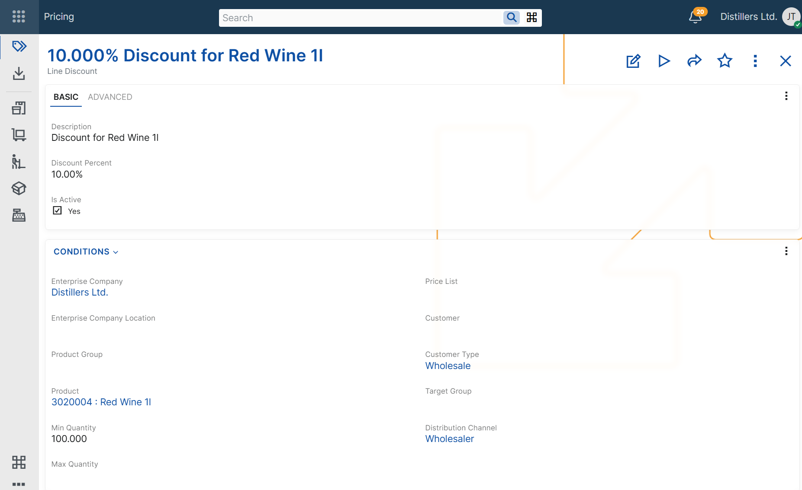
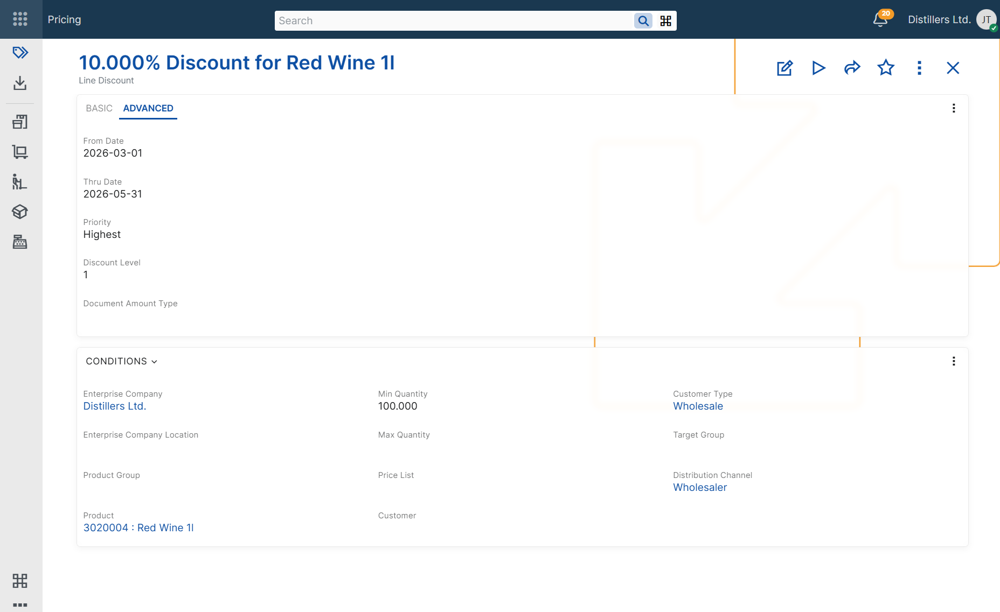

Configuring line discounts
Line discounts are configured by defining a line discount record and the conditions under which it can be applied.
Multiple line discount records can be defined, each with its own applicability conditions. When more than one line discount matches the current context, ERP.net determines the applicable line discount for each discount level according to the line discount determination algorithm.
When a sales document line is processed, the system automatically populates the corresponding Level 1 Discount, Level 2 Discount, or Level 3 Discount field with the selected line discount record, loads its discount percent into the corresponding discount percent field, and includes the result in the calculated Line Standard Discount Percent field.
Discount definition
A line discount record includes the following basic fields:
- Description
- Discount Percent
- Discount Level
These fields define how the discount is identified, what percentage is applied, and on which discount level it participates.
The Description field helps users recognize the discount when reviewing or selecting discount records.
The Discount Percent field stores the discount percentage that is applied when all configured conditions are matched.
The Discount Level field specifies the cascade level on which the discount is applied. ERP.net supports three discount levels. Each level is determined separately and can populate a different discount field in the sales document.
Applicability conditions
In addition to the base discount definition fields, a line discount record can include applicability condition fields. These fields limit when the discount can be considered during sales document processing.
If a line discount record contains multiple applicability conditions, all of them must match for the discount to be considered.
Product context
Use these conditions when the discount depends on the product being sold.
- Product – limits the discount to a specific product.
- Product Group – limits the discount to products in a specific product group.
- Min Quantity – the minimum product quantity in the sales document line for which the discount can be considered.
- Max Quantity – the maximum product quantity in the sales document line for which the discount can be considered.
Customer context
Use these conditions when the discount depends on customer-related information in the sales document.
- Customer – limits the discount to sales documents for a specific customer.
- Customer Type – limits the discount to sales documents for customers of a specific type.
- Target Group – limits the discount to sales documents for customers in a specific target group.
Commercial context
Use these conditions when the discount depends on the commercial setup of the sales document.
- Price List – limits the discount to sales documents that use a specific price list.
- Distribution Channel – limits the discount to sales documents in a specific distribution channel.
Organizational context
Use these conditions when the discount depends on the organizational context of the sales document.
- Enterprise Company – limits the discount to sales documents issued from a specific enterprise company.
- Enterprise Company Location – limits the discount to sales documents issued from a specific enterprise company location.
Validity context
Use these conditions when the discount must be available only during a specific period or only while the record is enabled.
- From Date – limits the discount to sales documents for which the context Date is on or after this date.
- Thru Date – limits the discount to sales documents for which the context Date is on or before this date.
- Active – indicates whether the line discount record is enabled for use.
Priority and discount level
The Priority and Discount Level fields affect how line discounts are selected and applied.
- Priority – ranks applicable line discounts within the same discount level during line discount determination in sales documents.
- Discount Level – determines which level-specific discount field is populated when line discounts are applied in sales order lines.
The level-specific discount fields are available in sales order lines only:
- Discount Level = 1 populates Level 1 Discount.
- Discount Level = 2 populates Level 2 Discount.
- Discount Level = 3 populates Level 3 Discount.
The selected line discount also provides the value for the corresponding discount percent field. The accumulated result is reflected in Line Standard Discount Percent.
For more information about how ERP.net selects the applicable line discount, see Determine line discount.
For more information about how discounts from multiple levels are applied and accumulated, see Multi-level line discounts.
Note
A line discount record must be unique for its combination of discount level and applicability context fields, such as product, product group, customer, customer type, price list, target group, distribution channel, validity period, quantity range, enterprise company, and enterprise company location. As a result, ERP.net does not allow duplicate line discount records for the same discount level and applicability context.


Document amount categorization
The Document Amount Type field specifies the document amount category for the line discount.
When a line discount with a specified Document Amount Type is applied in a sales order, ERP.net records the corresponding discount amount as a document amount and distributes it to the affected sales order line. This enables separate tracking of discount amounts for reporting and posting purposes.
This field does not participate in the line discount determination algorithm and does not affect discount applicability.
For more information about document amounts, see Additional amounts and Additional amounts determination and recording.
Matching configured conditions
A line discount can be considered only when the values in the sales document match the configured applicability conditions.
If a line discount record contains multiple applicability conditions, all of them must match for the discount to be applied.
For example, a line discount configured for a specific product and customer is considered only when both the product and the customer in the sales document line match the configured values.
For more information about how ERP.net selects the final discount when multiple line discounts are applicable for the same discount level, see Determine line discount.
Example scenarios
The following examples show how line discounts can be configured for different business needs and how the configured conditions affect the discount values loaded in the sales document line.
Note
The following examples assume that no other applicable line discount with higher priority exists for the same discount level.
Discount for a specific product
Use this scenario when a product should always receive a specific line discount.
Example configuration
Line Discount: Line Discount A
Description: Product A discount
Product: Product A
Discount Percent: 10%
Discount Level: 1
Sales document context
Product: Product A
Result
Level 1 Discount: Line Discount A
Level 1 Discount Percent: 10
Line Standard Discount Percent: 10%
Discount for a specific customer
Use this scenario when one customer has negotiated line discount terms.
Example configuration
Line Discount: Line Discount A
Description: Customer A discount
Customer: Customer A
Discount Percent: 12%
Discount Level: 1
Sales document context
Customer: Customer A
Result
Level 1 Discount: Line Discount A
Level 1 Discount Percent: 12%
Line Standard Discount Percent: 12%
Discount by quantity range
Use this scenario when the discount depends on the ordered quantity of a specific product.
Example configuration
Line Discount: Line Discount A
Description:Product A - quantity-based discount
Product: Product A
Min Quantity: 10
Max Quantity: 50
Discount Percent: 8%
Discount Level: 1
Sales document context
Product: Product A
Quantity: 12
Result
Level 1 Discount: Line Discount A
Level 1 Discount Percent: 8%
Line Standard Discount Percent: 8%
Time-limited discount
Use this scenario when a line discount must be valid only during a specific period.
Example configuration
Line Discount: Line Discount A
Description: June promotion
From Date: 2026-06-01
Thru Date: 2026-06-30
Discount Percent: 15%
Discount Level: 1
Sales document context
Required Delivery Date: 2026-06-15
Result
Level 1 Discount: Line Discount A
Level 1 Discount Percent: 15%
Line Standard Discount Percent: 15%
Negative examples
The following examples show cases in which a line discount is not considered because the sales order context does not match the configured applicability conditions.
Product mismatch
Use this scenario to show that a product-specific line discount is not considered for a different product.
Example configuration
Line Discount: Line Discount A
Product: Product A
Discount Percent: 10%
Discount Level: 1
Sales document context
Product: Product B
Result
This line discount is not considered.
Quantity outside range
Use this scenario to show that a quantity-based line discount is not considered when the sold quantity is outside the configured range.
Example configuration
Line Discount: Line Discount A
Product: Product A
Min Quantity: 10
Max Quantity: 50
Line Standard Discount Percent: 8%
Discount Level: 1
Sales document context
Product: Product A
Quantity: 5
Result
This line discount is not considered.